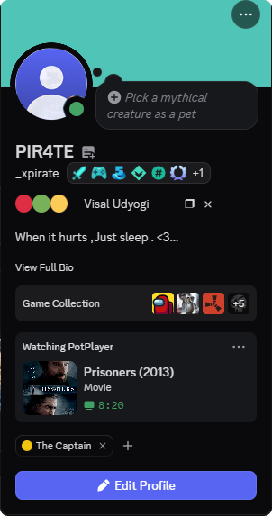

Automatic detection
Reads your player's window title and tells films from series episodes. Release noise like 1080p, x265 or site tags is cleaned up for you.
> Discord Rich Presence for Windows
Media RPC detects the film or episode playing in your video player and shows it on your profile as a Watching card, with poster, episode name and a live progress bar.
Free. No account, no API keys.

—
Downloads
—
Latest version
8
Supported players
Free
Open source
Live numbers from GitHub Releases.
01 / Features
Reads your player's window title and tells films from series episodes. Release noise like 1080p, x265 or site tags is cleaned up for you.
Artwork and episode titles come from TVmaze, iTunes, IMDb and Wikipedia. A poster is only used when the title and year really match.
PotPlayer, VLC, MPC-HC and MPC-BE show a bar that follows seeking, pausing and resuming. Other players get an elapsed timer.
The card says "Paused" while the video is paused, or hides itself entirely if you prefer.
Keep the film name off Discord. It only shows "Watching" your player, and the file name is never looked up online.
Get notified when a new version is out and update in one click. Downloads are checked against a SHA-256 checksum before installing.
02 / Players
Windows Media Player and the Windows 11 "Media Player" app don't put the film name in their window title, so they can't be detected.
03 / Get started
Grab MediaRPC.exe from the latest release. No installer, no Python.
Double-click it and keep the Discord desktop app open. It lives in your system tray.
Start a film or episode in your player. It now shows on your Discord profile.
04 / FAQ
The exe isn't code-signed, so Windows SmartScreen shows a warning. Click More info → Run anyway. The whole project is open source, and you can read the code or build the exe yourself on GitHub.
It needs the Discord desktop app on the same PC as your player. The browser version can't receive Rich Presence from apps.
That's a Discord rule: Rich Presence buttons are only shown to other people. Ask a friend to check, or hide the button in Settings.
Only the cleaned-up title (and year) is used to look up posters, and one request to GitHub checks for updates. Turn on privacy mode and even the title stays on your PC.
Yes. It is the total download count GitHub reports for MediaRPC.exe across all releases, fetched live when you open this page.